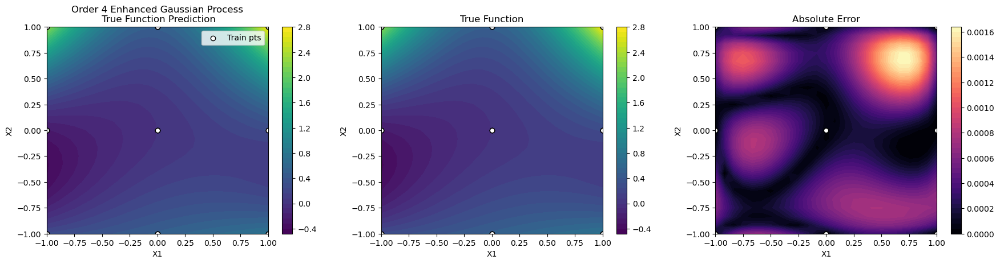

DEGP Tutorial: 3D Function Approximation with 2D Slice Visualization#
This tutorial demonstrates how to apply a Directional-Derivative Enhanced Gaussian Process (D-DEGP) to a 3-dimensional function. It uses a global set of directional derivatives (rays) corresponding to the standard Cartesian axes.
A key challenge in high-dimensional modeling is visualization. This script shows how to analyze the performance of a 3D model by taking a 2D slice (fixing the value of (x_3)) and plotting the GP’s predictions on that plane.
Key concepts covered: - Applying a D-DEGP to a 3D function. - Using a global basis of directional derivatives (standard axes). - Training the ddegp model on 3D data. - Visualizing high-dimensional model performance using 2D slicing.
Setup#
import numpy as np
import pyoti.sparse as oti
import itertools
from full_ddegp.ddegp import ddegp
import utils
import plotting_helper
Configuration#
n_order = 4
n_bases = 3
num_pts_per_axis = 3
domain_bounds = ((-1, 1),) * 3
# Slice visualization parameters
slice_dimension_index = 2 # Fix x₃
slice_dimension_value = 0.5 # Value of x₃
test_grid_resolution = 25
# Model and optimizer parameters
normalize_data = True
kernel = "RQ"
kernel_type = "isotropic"
n_restarts = 15
swarm_size = 50
random_seed = 0
np.random.seed(random_seed)
True Function#
def true_function(X, alg=np):
"""True 3D polynomial function of degree 4."""
x1, x2, x3 = X[:, 0], X[:, 1], X[:, 2]
return (x1**2 * x2 + x2**2 * x3 + x3**2 * x1 + x1**2 * x2**2)
Training Data Generation#
def generate_training_data():
"""Generate 3D training data and apply global directional perturbations."""
# 1. Create 3D grid of training points
axis_points = [np.linspace(b[0], b[1], num_pts_per_axis)
for b in domain_bounds]
X_train = np.array(list(itertools.product(*axis_points)))
# 2. Standard basis as rays
rays = np.eye(n_bases)
# 3. Apply directional perturbations
e_bases = [oti.e(i + 1, order=n_order) for i in range(rays.shape[1])]
perturbations = np.dot(rays.T, e_bases)
X_pert = oti.array(X_train)
for j in range(n_bases):
X_pert[:, j] += perturbations[j]
f_hc = true_function(X_pert, alg=oti)
for combo in itertools.combinations(range(1, rays.shape[1] + 1), 2):
f_hc = f_hc.truncate(combo)
# Extract derivatives
y_train_list = [f_hc.real]
der_indices = [[
[[1, 1]], [[1, 2]], [[1, 3]], [[1, 4]],
[[2, 1]], [[2, 2]], [[2, 3]], [[2, 4]],
[[3, 1]], [[3, 2]], [[3, 3]], [[3, 4]],
]]
for group in der_indices:
for sub_group in group:
y_train_list.append(f_hc.get_deriv(sub_group).reshape(-1, 1))
return {'X_train': X_train, 'y_train_list': y_train_list,
'der_indices': der_indices, 'rays': rays}
Training#
def train_model(training_data):
"""Initialize and train the D-DEGP model."""
gp_model = ddegp(
training_data['X_train'], training_data['y_train_list'],
n_order=n_order, der_indices=training_data['der_indices'],
rays=training_data['rays'], normalize=normalize_data,
kernel=kernel, kernel_type=kernel_type
)
params = gp_model.optimize_hyperparameters(
optimizer='jade',
pop_size = 100,
n_generations = 15,
local_opt_every = None,
debug = True
)
return gp_model, params
Model Evaluation on 2D Slice#
def evaluate_on_slice(gp_model, params):
"""Evaluate the GP model on a 2D slice of the 3D domain."""
# Determine which two dimensions are active
active_dims = [i for i in range(n_bases) if i != slice_dimension_index]
x_lin = np.linspace(domain_bounds[active_dims[0]][0],
domain_bounds[active_dims[0]][1], test_grid_resolution)
y_lin = np.linspace(domain_bounds[active_dims[1]][0],
domain_bounds[active_dims[1]][1], test_grid_resolution)
X1_grid, X2_grid = np.meshgrid(x_lin, y_lin)
# Build 3D test points (fix x₃)
X_test = np.full((X1_grid.size, n_bases), slice_dimension_value)
X_test[:, active_dims[0]] = X1_grid.ravel()
X_test[:, active_dims[1]] = X2_grid.ravel()
y_pred = gp_model.predict(X_test, params, calc_cov=False, return_deriv=False)
y_true = true_function(X_test, alg=np)
nrmse_val = utils.nrmse(y_true, y_pred)
return {'X_test': X_test, 'X1_grid': X1_grid, 'X2_grid': X2_grid,
'y_pred': y_pred, 'y_true': y_true, 'nrmse': nrmse_val}
Visualization#
def visualize_slice(training_data, results):
"""Visualize GP prediction and true function on 2D slice."""
plotting_helper.make_plots(
training_data['X_train'], training_data['y_train_list'],
results['X_test'], results['y_pred'], true_function,
X1_grid=results['X1_grid'], X2_grid=results['X2_grid'],
n_order=n_order, plot_derivative_surrogates=False,
der_indices=training_data['der_indices']
)
print(f" Visualization of slice at x₃={slice_dimension_value} created.")
Run Tutorial#
training_data = generate_training_data()
gp_model, params = train_model(training_data)
results = evaluate_on_slice(gp_model, params)
visualize_slice(training_data, results)
print(f"Final NRMSE on slice (x₃={slice_dimension_value}): {results['nrmse']:.6f}")
Gen 1: best f=-599.2026325712643
Stopping: Objective improvement < 1e-08 at generation 1

Visualization of slice at x₃=0.5 created.
Final NRMSE on slice (x₃=0.5): 0.000172